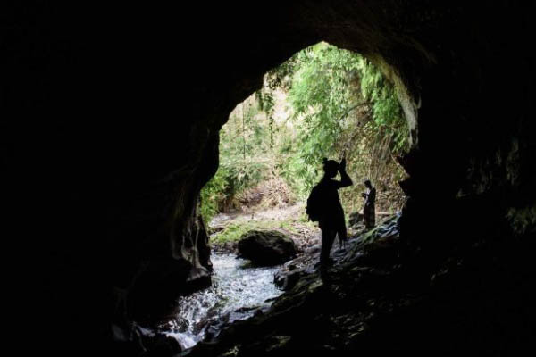
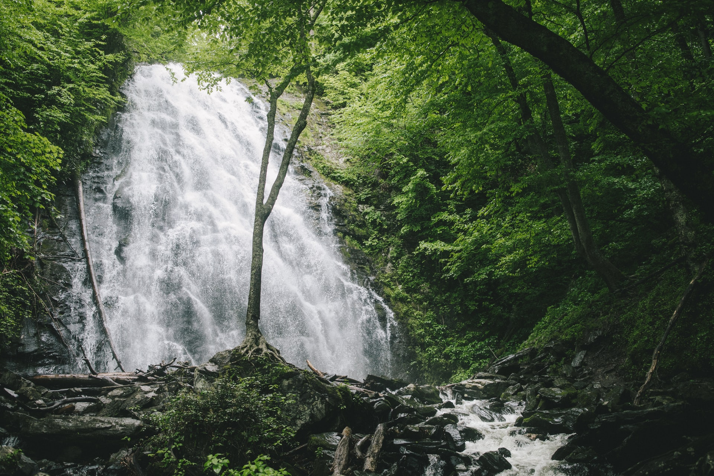

Goa Rang Reng
Pengunjung juga bisa mendatangi Goa Rang Reng selain menikmati air terjun.

Air Terjun
Air terjun yang sangan unik menjadi daya tarik wisatawan

Lebatnya Pepohonan
Daera yang masih asri dan sejuknya angin menjadi salah satu tempat untuk rehat yang tepat